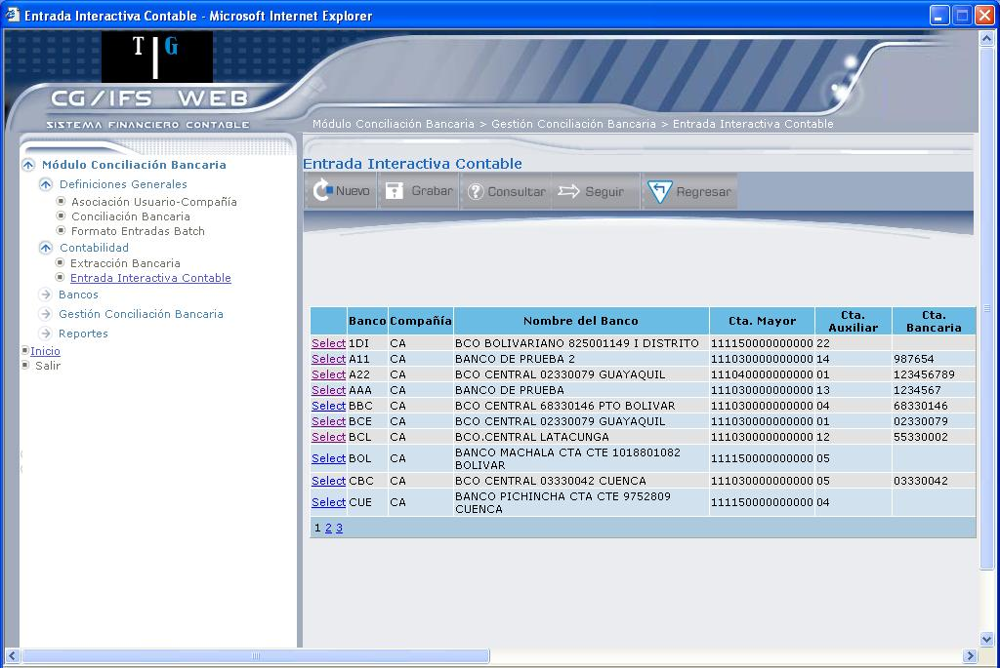
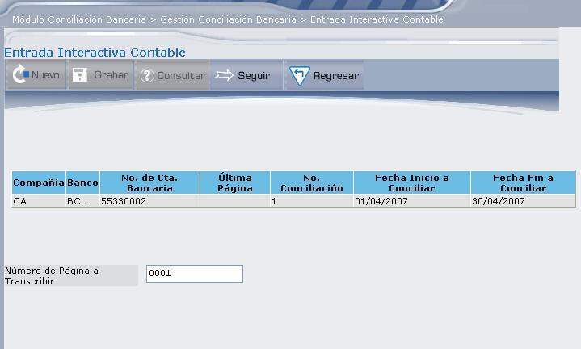
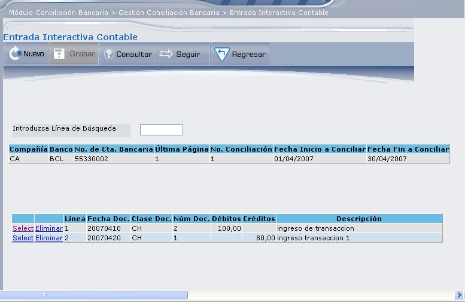
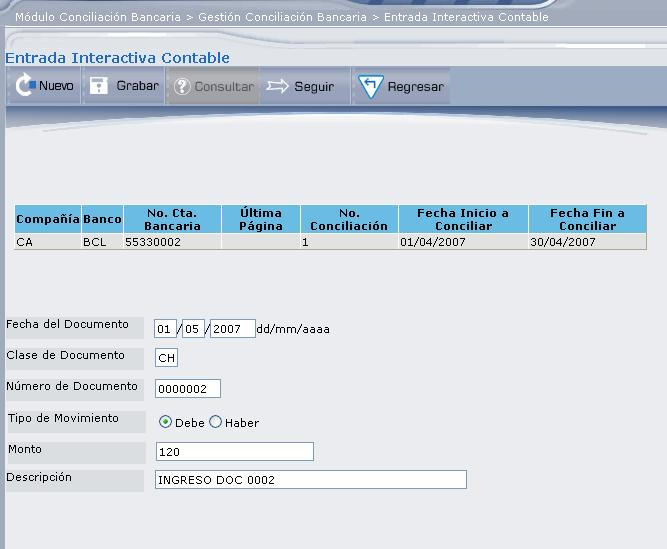

Entrada Interactiva Contable
Esta opción se usa para introducir en el sistema las partidas registradas en libros que no aparecen en el estado de cuenta en el momento de hacer la primera conciliación de un banco. Ejemplo de estas partidas puede ser: cheques emitidos en meses anteriores y que no han sido cobrados, depositados contabilizados que no aparecen en el estado de cuenta, etc.
La información de las partidas registradas en bancos y no registradas en libros debe introducirse a través del estado de cuenta.
Después que se hace la primera conciliación de un banco, no hace falta usar esta opción, el sistema guarda la información de las partidas pendientes de conciliar. La pantalla que despliega es la que muestra 4.16.

Figura 4. Entrada Interactiva Contable.
La pantalla despliega los bancos definidos en el sistema. El contenido de las columnas que aparecen en este formato es el siguiente:
Banco:
Despliega un código de tres caracteres que se usa para identificar al banco.
Compañía:
Despliega el código de compañía a la cual pertenece la cuenta bancaria.
Nombre del Banco:
Despliega el nombre del banco con que está registrado en la contabilidad.
Cta. Mayor:
Despliega la cuenta de mayor a la cual pertenece el banco.
Cta. Auxiliar:
Despliega el código de la cuenta auxiliar con el que identifica el banco en la contabilidad, sólo si el banco está registrado como auxiliar.
Cta. Bancaria:
Despliega el número de cuenta bancaria que identifica al banco en la contabilidad.
Seleccione el banco dando clic en el vínculo Select, para desplegar datos del banco y las fechas de extracción de movimientos, como se muestra en 4.17.

Figura 4. Entrada Interactiva Contable – Selección del Banco.
Número de Página a Transcribir:
El sistema graba la información por página. Cada página tiene capacidad para 998 entradas. Si se pasa de esta capacidad aparece un mensaje de error y no permite seguir con la entrada si no se va a cambio de página. Esto puede utilizarse, además, para llevar control de la entrada si se está copiando de algún listado previo somatizado por páginas.
BOTONES

Figura 4. Lista de transacciones ingresadas en el periodo de conciliación.
Desde esta pantalla podrá realizar las siguientes acciones:
- Consultar: Se realiza en el caso de que existan varios registros. En el campo “Introduzca Línea de Búsqueda”, digite el número de línea y presione el botón CONSULTAR, que desplegará los registros desde el que está buscando en adelante.
- Actualizar: Seleccione la transacción que desea actualizar dando clic en el vínculo Select, que desplegará una pantalla similar a la que muestra 4.19.
- Eliminar: Para eliminar de clic en el vínculo Eliminar, que desplegará el mensaje: “Registro Eliminado Correctamente”.

Figura 4. Ingreso de nueva transacción.
Fecha del Documento:
Digite la fecha en la que se originó la transacción, debe estar entre las fechas de conciliación.
Clase de Documento:
Digite la clase de documento, se utilizan dos caracteres para diferenciar los tipos de transacciones, por ejemplo: UD para depósitos, CH para cheques, etc. No para notas de débito.
Número de Documento:
Digite el número de la planilla de depósito, o el número de cheque, o el número de nota de débito/crédito, etc.
Tipo de Movimiento:
Marque el casillero de selección el tipo de movimiento que va a registrar.
- Debe: Importes que son a favor de la empresa, tales como depósitos, etc.
- Haber: Los importes que son a favor del banco, tales como cheques, etc.
Monto:
Digite el monto de la transacción.
Descripción:
Digite el concepto de la transacción.
BOTÓN
Created with the Personal Edition of HelpNDoc: Free Qt Help documentation generator